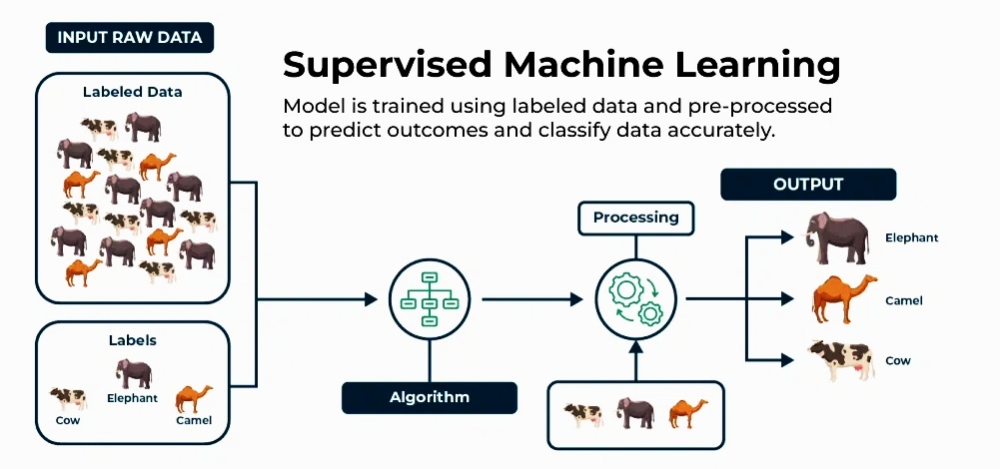

How does a supervised learning model learn from the training data?
A supervised learning model learns by analyzing input-output pairs in the training data. The model creates a mapping function that connects inputs to their corresponding correct outputs, continuously adjusting its internal parameters to minimize prediction errors through optimization algorithms like gradient descent.
The learning process involves iteratively comparing the model's predictions with the actual target values, calculating the error, and updating the model's weights to reduce this error over time.
